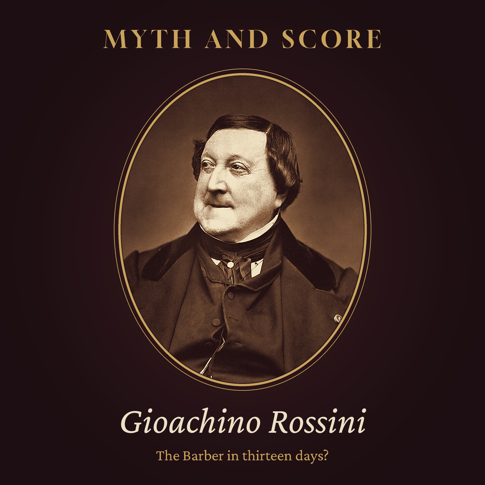

Myth and Score · Episode 8 · 45 min
Did Rossini Really Write The Barber of Seville in 13 Days?
Did Gioachino Rossini really write The Barber of Seville in thirteen days? The number comes mainly from Stendhal's lively life of Rossini of 1824, and in old age Rossini made it twelve, but nobody timed him. We hold the legend up to the record: a leap-day boy born in Pesaro in 1792 to a town trumpeter and a singer, an overture that opened two serious operas before it ever met a barber, a contract with a duke in debt in December 1815, a libretto written in January 1816 in the shadow of Paisiello's Barber of 1782, the disastrous first night of 20 February 1816 and the triumph of the second. The verdict: a little under three weeks, some borrowed music, and a masterpiece. Chapters: 00:00 Opening 01:48 The story everyone knows 03:08 Who counted the days? 05:00 A leap-day child 06:52 A father in prison 09:05 A young man in a hurry 11:32 The overture that travelled 14:01 Rome, December 1815 16:22 A barber who already existed 19:32 Sterbini's January 22:09 What he wrote, and what he took 25:13 A death in February 26:20 The worst opening night 30:50 The second night 32:29 The Barber of Seville 35:42 Largo al factotum 39:33 The verdict 42:22 Listening again Episode picture: Gioachino Rossini photographed by Étienne Carjat, 1865 (restoration), public domain (Wikimedia Commons). Read by a synthetic voice; script written and fact-checked by the show's team.
The script
There is a famous number attached to one of the most famous operas ever written. The number is thirteen.
The opera is The Barber of Seville. And the story goes that a young Italian composer, twenty-three years old, sat down in Rome in the winter of 1816 and wrote the whole thing, from the first note to the last, in thirteen days.
Myth and Score. Episode eight... Did Rossini really write The Barber of Seville in thirteen days?
On this show, we take the most famous stories about great composers and hold them up to the light. Some turn out to be true. Some are half true. And some are true in a way that nobody expected.
Tonight's story belongs to the third kind. It is about speed. And to test it, we have to ask three things. How long did Rossini really have? What did he actually write in that time? And who first counted the days?
To find out, we will visit a little town on the Adriatic coast where a town trumpeter played on the city walls, a music school in Bologna, three opera houses in Venice, a grand theatre in Naples run by a former waiter, a duke in Rome with more debts than money, a rival opera written for the court of Russia, and one disastrous night at the Teatro Argentina... and the night after it.
Chapter one. The story everyone knows.
Let us begin with the story as most people hear it.
In this version, Rossini is the laziest genius in the history of music. He spends his days eating, sleeping and joking. He leaves everything to the last minute. And then, when the deadline is upon him, he writes faster than anyone has ever written.
The Barber of Seville, the story says, was written in thirteen days. Some tellings make it twelve. Some make it a fortnight. And the story usually comes with a punchline. When another composer, Gaetano Donizetti, was told that Rossini had written the Barber in thirteen days, he is supposed to have said that this did not surprise him at all... Rossini had always been lazy.
It is a good joke. Nobody has ever found where Donizetti said it.
But the number itself is harder to dismiss. Because, as we shall see, one of the people who repeated it was Rossini himself.
Chapter two. Who counted the days?
The first writer to make the thirteen days famous was the French novelist Stendhal, who published a lively and not very careful life of Rossini in 1824, when the composer was only thirty-two.
Stendhal loved Rossini. He also loved a good story, and he did not always check whether a good story was true. A Victorian biographer of Rossini, writing in the 1860s, traced the thirteen days back to Stendhal, and added, a little drily, that if Rossini himself really said thirteen days, the question would be settled.
The trouble is that Rossini said a great many things. In old age, according to the standard accounts, he told visitors that he had written the Barber in twelve days... one day fewer than the legend.
So the legend has two parents. A novelist who wanted a dazzling hero, and an old man who enjoyed being one.
What do the people who study the documents say? They cannot count the days exactly, because Rossini did not keep a diary of his writing. But they can count the days between the papers that survive. And their answer is that the music of the Barber was written in a little under three weeks.
That is not thirteen days. But it is still astonishing. To understand how a man could do it at all, we need to go back to the beginning.
Chapter three. A leap-day child.
Gioachino Rossini was born in Pesaro, a small town on the Adriatic coast of Italy, on the twenty-ninth of February, 1792. A leap day. Later in life he liked to joke about it. Since his birthday came round only once every four years, he could claim to be much younger than he looked.
Pesaro was then part of the Papal States, ruled from Rome. And Rossini was born into music.
His father, Giuseppe Rossini, was a brass player... a horn player and trumpeter, and for a time the town's official trumpeter, who played for public ceremonies. He was a cheerful, outspoken man, and his nickname in the town was Vivazza... something like the lively one.
His mother, Anna Guidarini, had been a seamstress, the daughter of a baker. She had a lovely voice, and although she had no formal training to speak of, she went on to sing on the stage, in the opera houses of small towns along the coast.
Gioachino was their only child.
This matters for our story. Rossini grew up not in a palace or a cathedral, but in the working life of the theatre. His father played in the pit. His mother sang on the stage. From his earliest years, the boy knew how an opera was actually put together... in a hurry, by tired people, to open on a fixed night, whatever happened.
Chapter four. A father in prison.
The 1790s were not a quiet time to grow up in Italy. Napoleon's armies came down into the peninsula, and with them came new ideas about liberty and the rights of citizens.
Giuseppe Rossini welcomed them a little too loudly. When the Pope's forces returned to Pesaro, the father's republican sympathies caught up with him, and around 1799 he was arrested and put in prison for a time. Accounts differ on the details.
The family was poor, and it moved about. Anna sang wherever she could get work, and Giuseppe played in the orchestras of the theatres where she sang. The boy was left for a time with relatives, and apprenticed to a blacksmith, or so the family story goes, to frighten him into working harder.
Whatever the truth of that, it is clear that the boy had talent, and that people noticed it. By about 1804 the family had settled in Bologna, the great musical city of northern Italy. In 1806, at the age of fourteen, Gioachino entered the city's school of music, the Liceo Musicale, where he studied counterpoint with a learned old priest, Padre Stanislao Mattei.
In the same year, he was admitted to Bologna's famous Accademia Filarmonica, a society of musicians that had once admitted the boy Mozart.
He was a quick student. Perhaps too quick. Mattei wanted him to master the old church styles, slowly and thoroughly. Rossini wanted to know enough to write for the theatre, and then to get on with it. Years later he admitted that he had learned enough to write operas, and then stopped.
Chapter five. A young man in a hurry.
His chance came in Venice.
In 1810, a company at the small Teatro San Moisè needed a short comic opera, quickly. Rossini, eighteen years old, gave them one. It was called La cambiale di matrimonio... the marriage contract... and it opened on the third of November, 1810. It was a success.
Over the next three years, he wrote opera after opera, for Venice, for Bologna, for Ferrara, for Milan. Most were short, comic, and written fast. Some were forgotten at once. Others made his name.
Then, in 1813, came the year that made him famous.
On the sixth of February, 1813, at La Fenice, the grandest theatre in Venice, he gave the city a serious opera, Tancredi, a story of a knight and his beloved in medieval Sicily. One of its arias, Di tanti palpiti, was soon being sung, it was said, by gondoliers in the canals, and by lawyers in the courts.
And a few months later, on the twenty-second of May, at the Teatro San Benedetto, he gave the same city a comic opera, L'italiana in Algeri... the Italian girl in Algiers. To save time, he set a libretto that already existed. The impresario needed a new opera in a matter of weeks, and Rossini delivered it.
Notice the pattern. Already, at twenty-one, Rossini was known for two things. His tunes were irresistible. And he could produce them on demand.
There is a famous story from these years. Rossini is lying in bed, writing a duet, when a page slips off the bed onto the floor. Rather than get up and fetch it, he writes a new duet. It is a delightful picture of a lazy genius. And like most delightful pictures, nobody can tell us where it came from.
Chapter six. The overture that travelled.
Before we come to Rome, we must follow one piece of music on its travels. Because it is the first thing you hear when the curtain goes up on The Barber of Seville.
On the twenty-sixth of December, 1813, at La Scala in Milan, Rossini opened a serious opera called Aureliano in Palmira, about a Roman emperor and a queen of the East. It was not a great success. But it had an overture.
In 1815, Rossini moved to Naples. The theatres there were run by a remarkable impresario named Domenico Barbaja, who had started life, by some accounts, as a café waiter, made a fortune selling a whipped coffee drink, and later from the gambling tables in the theatre foyers. Barbaja offered Rossini a contract to run the music of the royal opera houses, and to write operas for them.
Rossini's first opera for Naples, Elisabetta, regina d'Inghilterra... Elizabeth, Queen of England... opened at the great Teatro San Carlo on the fourth of October, 1815. And its overture was the overture from Aureliano, with some changes.
Five months later, the same music would open The Barber of Seville.
So the most famous comic overture in the world began its life in front of a serious opera about a Roman emperor, and travelled through a second serious opera about an English queen, before it ever met a barber.
That tells us something important. In Rossini's world, an overture was not a portrait of the opera that followed it. It was a way to get the audience into their seats and quiet. And music that had been heard in Milan or Naples could be used again in Rome, where nobody had heard it. Composers of the time did this all the time. Rossini simply did it more often, and more cheerfully, than most.
Chapter seven. Rome, December 1815.
At the end of 1815, Rossini came to Rome. He had been allowed to take work outside Naples, and the Roman theatres wanted him.
His first job there was a semi-serious opera for the Teatro Valle, called Torvaldo e Dorliska. It opened on the twenty-sixth of December, 1815. Its libretto was by a young Roman poet, a civil servant by day, named Cesare Sterbini. Remember the name.
But before Torvaldo had even opened, Rossini had signed a second contract, with a second theatre.
The Teatro Argentina was one of the largest theatres in Rome. Its owner and impresario was a nobleman, Duke Francesco Sforza-Cesarini. He loved the theatre, and by all accounts he had run up large debts in the service of that love. He needed a new comic opera for the carnival season of 1816, the busiest weeks of the theatre year, when Rome went out every night.
The contract with Rossini is dated the fifteenth of December, 1815. Some sources give a slightly later date, but the fifteenth is the date most often printed. Its terms tell us a great deal.
Rossini would write a comic opera, on a libretto the impresario would choose. He would deliver the score by the middle of January. He would adapt the music, if needed, to the voices of the singers. And he would be given lodgings for the season... according to the copy of the contract kept at La Scala's museum, in the same house as one of the singers, the baritone Luigi Zamboni, who would sing the title role.
Now look at the dates. The contract was signed in mid-December. Rossini was still rehearsing Torvaldo. And there was not yet a libretto.
Chapter eight. A barber who already existed.
The first poet the Duke turned to, an experienced Roman librettist named Jacopo Ferretti, offered a story that was judged too ordinary. So the job went to Sterbini, the poet of Torvaldo.
The subject chosen was a play by the French writer Beaumarchais, The Barber of Seville, first staged in Paris in 1775. It is a story of trickery and young love. A count disguises himself to win a clever young woman, Rosina, who is kept almost a prisoner by her old guardian, Doctor Bartolo, who means to marry her himself. And the count's helper is the town barber, Figaro... the man who knows everyone, fixes everything, and has a hand in every plot.
There was one difficulty. The play had already been made into an opera. And not by just anybody.
In 1782, Giovanni Paisiello, one of the most admired Italian composers of his day, had set the same play for the court of the Empress Catherine the Great in Saint Petersburg. His Barber of Seville had travelled all over Europe and was loved everywhere. In 1816 Paisiello was still alive, an old man of seventy-five, honoured in Naples. And he had many admirers in Rome.
For a young composer of twenty-three to set the same story looked, to some, like a challenge. Even an insult.
So Rossini's opera was not called The Barber of Seville at first. It was called Almaviva, ossia L'inutile precauzione... Almaviva, or the useless precaution... after the count, and after the play's own subtitle.
And the printed libretto that was sold at the theatre carried a little notice to the public. In it, the writers explained that they had changed the title, and much of the shape of the story, to show their respect for the celebrated composer who had set it before.
Was that the whole truth? It is hard to say. One Italian musicologist has argued that the notice was aimed at flattering someone else entirely, and that its talk of respect for Paisiello should not be taken quite at face value.
There is also a well-loved story that Rossini wrote to Paisiello before he began, asking the old master's permission, and that Paisiello, sure that the young man would fail, replied that he had no objection. It is a nice story. As far as we could find, the letter has never been produced.
Chapter nine. Sterbini's January.
Now we come to the heart of the matter. When was the Barber actually written?
According to the Italian programme books that have studied the papers, Sterbini worked on the libretto between the eighteenth and the twenty-ninth of January, 1816.
Think about that. The contract had asked Rossini to deliver the score by the middle of January. By the middle of January, there were no words to set.
So Rossini did what composers of his time often did. He did not wait for the whole libretto. He set the verses as they came, scene by scene, while Sterbini was still writing the rest. The poet would hand over a scene. The composer would set it. The copyists would write out the parts. The singers would begin to learn them.
The opening night was fixed for the twentieth of February. From the start of Sterbini's work to the opening night was a little over a month. Inside that month, the music had to be written, copied, learned and rehearsed.
Try to picture the house where he lodged that winter. A composer at a table, covered in sheets of music paper. A poet arriving with the next scene, the ink hardly dry. A copyist waiting to take away the finished pages, so that each singer could have his own part. And down the corridor, Zamboni, the Figaro, who could try a phrase the moment it was written. It was less like an artist alone in a garret, and more like a newspaper office the night before an election.
And Rossini was not the only one in a hurry. Every opera house in Italy worked this way. A season was planned, singers were hired, a night was fixed, and the opera was made to fit. Nobody expected a composer to spend a year on a comedy. What was unusual about Rossini was not that he wrote fast. It was how good the music was when he did.
That is why scholars speak of a little under three weeks for the writing itself. Not because anyone timed him, but because the calendar does not allow much more.
Chapter ten. What he wrote, and what he took.
So, a little under three weeks. But three weeks to write what?
The Barber is a long opera. Two acts, about two and a half hours of music. Arias, duets, a trio, a quintet, two big ensembles that end the first act and the second, a storm, and hundreds of lines of quick sung dialogue between them.
Some of it was not new.
The overture, as we have seen, was already more than two years old.
The count's serenade, near the very beginning of the opera, Ecco ridente in cielo... see, smiling in the sky... is built on music that Rossini had already used in Aureliano in Palmira, the same unlucky opera that gave him the overture.
The little storm in the second act, played by the orchestra while the stage is empty, is often said to come from an earlier comic opera of his, La pietra del paragone, of 1812.
And there is something else. In an Italian opera of this time, the long stretches of quick dialogue between the songs were sung to the simplest possible accompaniment, a few chords on a keyboard. They were not thought of as the composer's real work. Several scholars have suggested that some of this dialogue in the Barber, and perhaps one small aria for a minor character, may have come from a helper's pen. That was normal practice. It is also hard to prove either way.
So when we say Rossini wrote the Barber in under three weeks, we must be fair. He did not write every bar of it from nothing.
But we must be fair in the other direction too. Almost everything we remember about the Barber was new. Figaro's entrance. Rosina's first aria. The music teacher's song about slander. The great ensembles. And the way that it all moves, the bubbling, rushing, unstoppable energy of it... that was new, and it was his.
And borrowing went both ways. At the end of the Barber, the count has a long and brilliant aria, so difficult that it is often cut. A year later, Rossini took its final melody and gave it to the heroine of his next comic opera, Cinderella, where it became her famous closing rondo.
He was not lazy. He was thrifty. A good tune, in his view, deserved more than one evening.
Chapter eleven. A death in February.
While Rossini was writing, the man who had hired him was dying.
Duke Francesco Sforza-Cesarini had been ill. And in February 1816, while the rehearsals were going on, he died. Most accounts give the date as the sixth of February, about two weeks before the opening night. At least one Italian source places it later, only days before. Either way, the impresario never heard the opera he had commissioned.
His death left the Teatro Argentina in difficulties, with debts, and an opera nearly ready. The season went on. It had to. But the house that opened its doors on the twentieth of February did so without its master.
It is a sad, quiet fact, easily lost under the comedy of what came next.
Chapter twelve. The worst opening night.
On the evening of Tuesday the twentieth of February, 1816, at the Teatro Argentina, Almaviva, or the useless precaution, had its first performance.
Rossini sat at the keyboard in the orchestra, as composers did then, to lead the performance.
The cast was strong. The count was sung by the great Spanish tenor Manuel García. Figaro was Luigi Zamboni, Rossini's housemate. Rosina was sung by a young contralto from Bologna, Geltrude Righetti-Giorgi, an old friend of the composer. The music teacher, Don Basilio, was Zenobio Vitarelli. And Doctor Bartolo was Bartolomeo Botticelli.
What happened next is one of the most famous disasters in the history of opera. But here we have to be careful. Almost everything we know about it comes from accounts written years later... by the Rosina of that night, Righetti-Giorgi, in a little pamphlet she published in 1823 to defend Rossini, by Stendhal, and by others who were not there. Every detail that follows is a story told later. Not all of it can be proved.
Here is how the story is told.
Rossini, it is said, came to the keyboard in a new coat of a pale hazel colour, with gold buttons, and the audience laughed at it before a note was played.
When García came out to sing his serenade under Rosina's window, he accompanied himself on the guitar. In some tellings, the guitar was out of tune and he had to tune it in front of the audience. In others, a string broke. Either way, the audience began to laugh and whistle, and to imitate him.
Then the singer of Don Basilio made his entrance... and tripped, fell, and hurt his face. He sang his aria, so the story goes, while trying to stop his nose from bleeding. In some versions, it is not Basilio who falls, but García. The accounts do not agree.
And then, in the great ensemble at the end of the first act, a cat wandered onto the stage. The singers tried to chase it off. It ran from one to another. The audience joined in, calling to it and meowing.
By the second act, according to Righetti-Giorgi, the noise was such that hardly a note could be heard.
Now, let us hold these stories up to the light.
Were they true? Some of them may well be. Opening nights in those days were rough, and Roman audiences were famously loud. But a pale coat, a broken string, a bleeding nose and a wandering cat, all on one night, is a lot of bad luck for one opera. It sounds, at least in part, like a story that has been polished every time it was told.
What we can say is that the night was a failure. That is not only the memory of the singers. Two Roman noblemen kept diaries that winter. One of them wrote, the very next day, of the opera's unhappy result. The other noted simply that it had been booed.
And there is a likelier reason than the cat. Many people at the Argentina that night, it seems, came wanting it to fail. They were admirers of Paisiello, and of his Barber, and some historians think they were organised. Others in the theatre had quarrels with the management, or with Rossini himself. Whether Paisiello knew anything about it, nobody can say.
So the disaster was real. But the reason was less a cat than a crowd.
Chapter thirteen. The second night.
And here the story turns.
Rossini, the story says, did not go to the theatre for the second performance. He stayed home, saying he was ill.
He did write to his mother after the first night. It is one of the few documents of these days in his own words. He told her, in a few lines, that the opera had been hissed... and also, with remarkable calm, that the music was very fine.
He was right. On the second night, the audience listened. The trouble-makers were gone, or bored, or outnumbered. Some changes had been made... García, it is said, dropped the unlucky serenade and sang something else, and the music finally began to be heard.
It was a success. By most accounts, by the end of the evening the audience was cheering, and a crowd went through the streets to Rossini's lodgings to applaud him. In one version, Rossini heard the noise coming, thought it was a mob that had come to beat him up, and hid. That last detail, too, is a story told later.
Within a few performances, the Romans had made up their minds. The opera that had been booed on Tuesday was the talk of the city by the end of the week.
Chapter fourteen. The Barber of Seville.
On the fifth of June, 1816, a little more than three months after that first night, Giovanni Paisiello died in Naples.
That August, in Bologna, Rossini's opera was given under a new title. Not Almaviva any more, but Il barbiere di Siviglia. The Barber of Seville. The old title had done its work. The new one has never been changed since.
And slowly, the young man's Barber took the place of the old man's. Paisiello's opera did not vanish, but it became something for specialists. Rossini's became the Barber.
It travelled faster than its composer. In London, Paris, Vienna. And in 1825, it crossed the Atlantic. On the twenty-ninth of November, 1825, at the Park Theatre in New York, Manuel García, the same tenor who had sung the count on that disastrous first night in Rome, brought a company of singers to America, and opened with The Barber of Seville in Italian. It was among the very first operas ever sung in Italian in the United States. The Rosina was his seventeen-year-old daughter, Maria, who would soon become famous all over Europe under her married name, Maria Malibran.
So the man with the broken guitar string carried the opera across an ocean.
There is one more meeting worth telling, though only in the way Rossini told it, many years later. In the spring of 1822, in Vienna, the young Rossini went to visit Beethoven. Beethoven was old before his time, almost completely deaf, living in rooms that shocked his visitor. They spoke with difficulty. And as Rossini was leaving, Beethoven, he said, praised the Barber, and told him to write more Barbers... comedy, not serious opera, was where his gift lay.
We have only Rossini's word for the details. But the advice was well meant. And, in a way, it was already too late. By then, Rossini was writing mostly serious operas, for Naples, for Paris.
In 1829, he wrote his last opera, William Tell, for Paris. He was thirty-seven. And then, to the astonishment of the world, he stopped writing operas altogether. He lived almost forty years more, cooking, entertaining, writing small witty pieces for his friends, and suffering long periods of illness. He died in Passy, near Paris, on the thirteenth of November, 1868.
In all those years, the Barber never left the stage.
Chapter fifteen. Largo al factotum.
What was it that he wrote, in those three weeks?
It begins, after the borrowed overture, at night, in a street in Seville, with a serenade under a window. And then, offstage, a voice. La ran la lera... a barber coming down the street, singing to himself.
This is Figaro. And his entrance song, Largo al factotum... make way for the factotum, the man who does everything... is one of the most famous pieces of music ever written for the stage. Even people who have never been to an opera know it. Figaro here, Figaro there, Figaro up, Figaro down. A man so much in demand that he cannot get a moment's peace, and loves every second of it.
Then comes Rosina. Rossini wrote her for a low female voice, a contralto, for his old friend Righetti-Giorgi. And her first aria, Una voce poco fa... a voice, a little while ago... begins softly, almost dreamily, as she thinks of the voice she heard under her window. And then it changes. She tells us that she is sweet, and obedient, and gentle... unless someone crosses her. Then she becomes a viper. It is the portrait of a clever young woman who is nobody's prisoner. For much of the nineteenth century and after, it was sung by sopranos, higher than Rossini wrote it. In the twentieth century, singers went back to his own lower keys.
Then there is the music teacher, Don Basilio, and his song about slander, La calunnia. It begins as a little breeze, a whisper. It grows, very gradually, louder and louder, as the gossip spreads from mouth to mouth, until it explodes like a cannon shot. It is Rossini's famous crescendo, the slow, steady build that he used again and again, and that audiences called, half in admiration and half in mockery, the Rossini steamroller.
And at the end of the first act, all of them together... the count disguised as a drunken soldier, Bartolo furious, Rosina scheming, Figaro trying to calm everyone, and the soldiers of the guard knocking at the door... in an ensemble of such controlled chaos that the characters themselves sing that their heads are spinning.
More than eighty years after the premiere, near the end of his own long life, the composer Giuseppe Verdi wrote to a friend that, for its abundance of real musical ideas, its comic spirit and its truth, he could not help thinking the Barber the finest comic opera in existence.
That is the music of the three weeks.
And the manuscript in Rossini's own hand survives. It is kept today in Bologna, the city where he learned his trade. In the 1960s, an Italian conductor, Alberto Zedda, went back to it and prepared a new edition, cleaning away a century and a half of changes made by other hands... added notes, heavier orchestration, cuts. The Barber that many opera houses now perform is closer to what Rossini wrote in that Roman winter than anything audiences heard for a hundred years.
Chapter sixteen. The verdict.
So what is left, when we hold the myth up to the light?
The thirteen days are legend. The number comes to us mainly through Stendhal, who wrote the first life of Rossini in 1824 and liked a dazzling story better than a checked one. Rossini himself, in old age, made it even shorter, and spoke of twelve. Nobody timed him. And no document counts the days.
The speed is real. The contract was signed in mid-December 1815, while Rossini was still busy with another opera in another theatre. His librettist worked between the eighteenth and the twenty-ninth of January, 1816. The opening night was the twentieth of February. Between those dates, the music had to be written, copied and rehearsed. The scholars' estimate, a little under three weeks for the writing, may not be exact. But it cannot be very far wrong.
The borrowing is real too. The overture had already opened two operas before this one. The count's serenade and, it seems, the storm, came from earlier work. Some of the plain sung dialogue may have come from a helper. That was the custom of the day. It does not make the Barber less his.
The premiere was a real failure. Two diaries of the time record it. But the colourful details, the hazel coat, the guitar, the bleeding nose and the cat, come from memories written years later, and they do not all agree. The likelier reason for the uproar was not a cat, but a crowd that came wanting the young man to fail, loyal to old Paisiello's Barber.
The second night's success is real. So is the change of title, in Bologna, that August, after Paisiello's death.
And the Duke who commissioned the opera did die in February 1816, during the rehearsals, and never heard it.
So, did Rossini write The Barber of Seville in thirteen days?
The answer of the evidence is no... but not by much. He wrote it in a little under three weeks, starting, in places, from music he already had. And what he made in those three weeks has outlived nearly every opera written with all the time in the world.
Chapter seventeen. Listening again.
There is one more thing worth saying.
The legend of the thirteen days was meant as praise. But it does a strange kind of damage. It makes the Barber sound like a lucky accident, a piece dashed off by a lazy genius who could do anything he liked without trying.
The truth is more interesting. Rossini could write that fast because he had been training for it since he was a child, in the orchestra pits and backstage corridors where his father played and his mother sang. Because he had already written some sixteen operas, and learned exactly how to make a stage come alive. Because he knew which of his old tunes were good enough to live again. And because he was working inside a theatre system that did not give anyone more than a few weeks.
So listen again, sometime. Listen to the overture, and remember it was written for a Roman emperor. Listen to Figaro coming down the street, and remember that the young man who wrote it had perhaps three weeks. Listen to Rosina, sweet and obedient, until someone crosses her.
And remember the people around it. A town trumpeter and a seamstress who sang. A poet who wrote his libretto in about twelve days. A Spanish tenor with a guitar. And a duke in debt, who gambled his theatre on a young man's speed... and did not live to see that he had won.
This has been Myth and Score. The sources for tonight's episode are in the notes.
Thirteen days, twelve days, three weeks... and two hundred years on the stage.
This episode was read by a synthetic voice. If these stories keep you company, follow the show... it helps others find it.
Read the composers in their own words: Verdi's Letters in English
Also from the late hours: Embers of History · Slow Orbit · The Quiet Armoury
On YouTube: Opera Stories · Slow Orbit
Free line-by-line English translations of art songs
Enjoying the shows? Leave a tip (no fees)